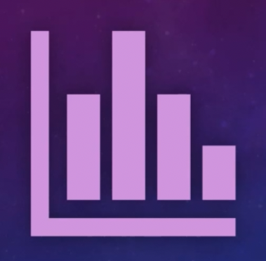
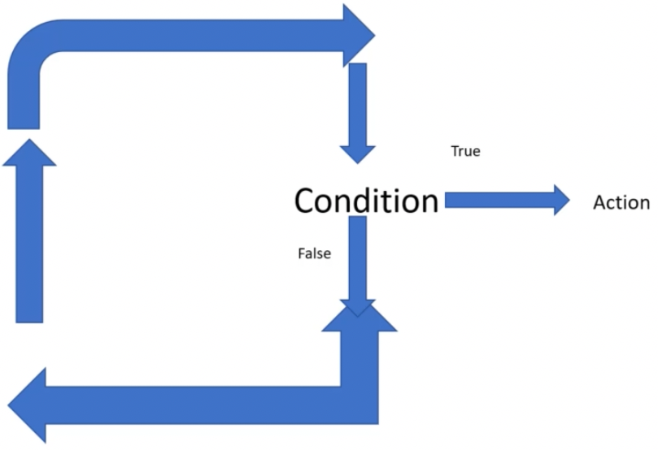
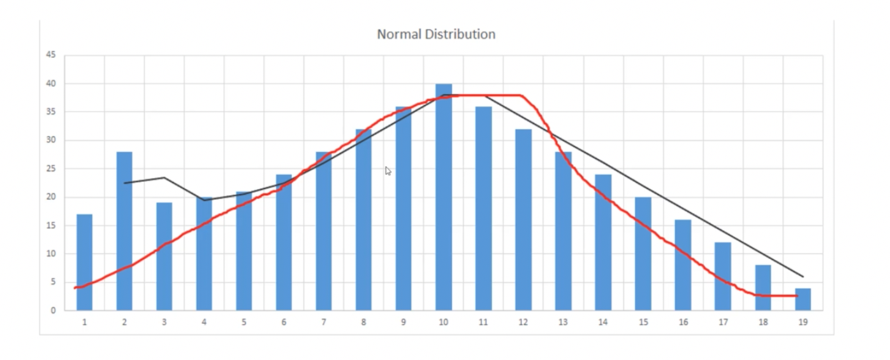

Machine Learning & Data Science with R
Table of Contents
- 1. Contents
- 2. Machine Learning and Data Science Introduction
- 3. Hand’s on R: Programming for Machine Learning and Data Science
- 4. Assignment
- 5. Machine Learning Fundamentals
- 6. Data Visualization with R
- 7. Applied Ststistics for Machine Learning
- 7.1. Introduction to Applied Statistics with Variables and Sample Size
- 7.2. Descriptive vs Inferior Analysis
- 7.3. Mean, Median, Mode and Range
- 7.4. Variance and Standard Deviation
- 7.5. Standard Error, Skewness with Kurtosis
- 7.6. P Value with Confidence Interval
- 7.7. T test and F ratio
- 7.8. Hypothesis Testing
- 8. ANOVA with R
- 9. Linear Regression with R
- 10. Logistic Regression with R
- 11. Dimension Reduction Technique
- 12. Clustering with K-Means
- 13. Tree based models - CART & Random Forest
- 14. KNN - K Nearest Model
- 15. Naive Bayes
- 16. Neural Networks with R
1 Contents
- Machine Learning and Data Science Introduction
- Hand’s on R - Programming for Machine Learning and Data Science
- Machine learning fundamentals
- Data visualization with R
- Applied Statistics for Machine learning
- Machine learning fundamentals (Models)
- ANOVA with R
- Linear Regression with R
- Logistic Regression with R
- Dimension reduction technique
- Clustering with K-Means
- Tree based models- CART & Random Forest
- KNN- K Nearest Model
- Naive Bayes
- Neural Networks with R
2 Machine Learning and Data Science Introduction
2.1 Course Structure
- R - Tool
- Data Visualisation
- Fundamentals of Applied Stastics
- Machine Learning Fundamentals
2.2 Machine Learning and Data Science in Scope
- Machine Learning Fundamentals like supervised machine learnin, unsupervised machine learning etc.
- R Programming Language - Fundamentals of R, data selection & manipulation with R, handling missiong values in R
- Reading various files in R
- Data visualization in R - Base functions to create bar plots, histograms, plots with libraries like ggplot2, maps, scatter3d plot & lattice
- Applied statistics for machine Learning - descriptive analysis vs inferial analysis, t-test, confidence interval, standard error, standard deviation, varance, hypothesis testing and more
- Linear Regression with R
- Logistic Regression with R
- Dimension Reduction techniques covering PCA
- Clustering fundamentals with implementation of k-means in R
- Tree based machine learning techniques like CART and Random Forest
- KNN Implementation in R
- Naive Bayes in R
- Neural Network in R
2.3 Data Science Help
- To University Forum - http://www.topuniversityforum.in/forums/artificial-intelligence-machine-learning.47/
- Stack Overflow - https://stackoverflow.com/
2.4 Data Science as Career
Data Driven Managers, Digital Marketing, Machine Learning, Deep Learning, Deep Learning and Artificial Intelligence
2.4.1 Portfolio
- Personal website/blog
- Github - https://github.com
2.4.2 How to make right decision for your career in data science and machine learning
This is one of the most important decision for you and you should use following factors to determine he right choice
- Job Profile Relevance - Exact Match, Partial Match, No Match
- Job Experience and Current Position
- Passion or Need
- Other Resources like Time and Money you can spend to learn New Skills
2.4.3 Business Analytics
Businiss analytics is a field dedicated to make data driven decisions based on current and past data. It is closely related to business intelligence also. Both fields are essential but closely related so if you are looking for job and have experience in either of fields, you can easily cross over to others.
People in this field hardly code and they primarily use tool’s like Microsoft Excel, Tableau etc. These tool’s generate Reports which are used for BA or BI
2.4.4 Machine Learning Engineer
- You will find openings with Title Machien Learning Engineer
- Job responsibilities are largly technical side of Data Science and need expertise in R, SQL, PYTHON etc.
2.4.5 Data Scientist
- As per HBR “Sexiest Job of 21st Century”
- It’s a broad term including all kind of roles related to data science (AI, ML, DL)
- Actual role and responsibilities could be far more specific like domain experts, programmer (R or Python), tool expert like Tableau or SPSS. Role is much into Data Analysis with technology sorrounding it
2.5 Machine Learning Fundamentals
Let’s Dive
2.5.1 Artificial Intelligence (AI)
- It is the higher umbrella category covering all aspect of the space where machines are expected to use intelligence for decision making
- IBM Watson is a common example of AI Tool
- It encompasses machine learning and Deep Learning Fields
- In reality, artificial intelligence is a broad field which has been derived from Math, Computer Science, Neuroscience and Artificial Psychology
2.5.2 Machine Learning

- Machine Learning is the application of Artificial Intelligence
- Machine Learning is a Subset of AI
- Machine Learning use stastical analysis to deliver results
- In Machine Learning, you define the Features you need to make Predictions or to perform a task like E-mail Classification
2.5.3 Deep Learning
- Deep learning takes the automation a step ahead and you don’t need to define the features
- It is practically a subset of Machine Learning and but different from the rest of the algorithms
- It is inspired by neuron and attempt is to make artificial neurons mimicking human neurons
2.5.4 ML vs DL
| Machine Learning | Deep Learning |
|---|---|
| Need lesser data than Deep Learning | Need more data |
| Can work with CPU | Needs GPU for optimum performance |
| Need to manually define the features | System can automatically figure that out |
| Good & Recommended when you need to | Recommended when your focus is on output, |
| control feature defination and recreation | and not on ability to define feature but |
| is not recommended when feature defination | |
| is important |
2.5.5 Type of Machine Learning
Supervised Machine Learning
In all types of machine learning algorithm, you train your code with existing data. If this data is Labeled and have details about the properties of data, it is called Supervised Machine Learning, you train your data with labeled data and then compare the results. For example, you are developing a algorithm to automatically detect Spam Emails. Non Spam Emails are called ham. So in this case, you will create a dataset with information on spam and ham emails, something like this:
Spam Ham Subject Contain Free Subject Dosen’t Contain Free Subject Contain Win Subject Dosen’t Contain Win You will feed this data to your algorithm for Training Purpose, your code will learn and based on this, it will be able to make predictions in the future unlaneled dataset because it will know the rules of spam and ham emails.
Unsupervised Machine Learning
In unsupervised machine learning, training data is not labeled. So if we usethe last example, our training data will not be clearly marked as spam and ham. You will simply supply the data, your code will run on it and mark certain emails as Spam and Not Spam. You will evaluate it’s performance and that’s how it learns. This is usually used in case of business scenarios where you need to perform grouping or in case of this field, clustering. For example, let’s say if you have a dataset of blood report of diabetic patient and you want to make certain groups. In this case you can simply create a algorithm which will create cluster of dataset with similar properties, let’s say fasting blood level group with similar range.
Reinforcement Machine Learning
It is like carrot and stick approach where you train your code with rewards and punishment on each success and failure. So if they get their prediction right, they are rewarded and if they get their prediction wrong they are penalized. Self driving cars and chess playing bots are common example of this. This form of machine learning is required when there is a lot of uncertainty and software need to make real time decision.
3 Hand’s on R: Programming for Machine Learning and Data Science
3.1 R - Introduction with Installation of R Studio
3.1.1 R Overview
- R Programming language is based on S language which was developed much earlier in 70’s
- R Programming language was developed in 90’s by Ross Ihaka and Robert Gentleman while working in the university of Auckland
- R is an open source GNU project
- Compatible with all major OS - MacOS, Linux, Unix, Windows, platforms
3.1.2 R Advantage
- Compatible with MacOS, Linux, Windows
- Free
- Not so steep learning curve to begin with
- Tons of packages for machine learning so our life becomes easy
- Still one of the most widely used language for machine learning
3.1.3 R Installation
- Step 1 - Download R - https://www.r-project.org/
- Step 2 - Download R Studio - https://www.rstudio.com/products/rstudio/download/
3.2 Vectors, Matrix and Data Frame
Know the basic before jumping into it
3.2.1 Vector and Matrix
- Sample (observations) size is 7 and there are 4 features (variables). These 4 properties will be displayed in columns with 7 rows. First row will represent the name column.
| Name | Feature1 | Feature2 | Feature3 | Feature4 |
|---|---|---|---|---|
| name1 | ||||
| name2 | ||||
| name3 | ||||
| name4 | ||||
| name5 | ||||
| name6 | ||||
| name7 |
- Matrix can be represented by 7x5
- 7 Rows and 5 Columns
- Each row or column is a vector
- Entire dataset is a matrix. It is a multidimensional array (think of a spreadsheet), with multiple rows and columns
- representation: xji
- i = serial/sequence number of sample
- j = serial/sequence number of dimension
- For matrix(X) - Capital letters are used, for vectors(x) - smallletters are used. But the concept remain same.
- So as in our example we have, 7 samples/observations, 4 features
- Therefore I can go upto 7 and I can go upto 4
- x34: Here we are talking about 4th sample out of 7 and 3rd Feature or 3rd column in the spreadsheet. It is the index value. So if the 36rd column is “color”, it means we are talking about color of 4th sample.
- Row vectors are represented by [x3nil49 + x450]
- Column vectors are represented by [x349] [ + ] [x450]
3.2.2 Data Frame
- Tabular data structure with rows and columns
- Data frame is a stastical concept
- Usually Matrix will have only 1 type of data like numeric, character etc.
- A data frame can have multiple data types so one column could me numerical whereas other could be character
3.3 Data types in R
library(lattice) xyplot(1:10 ~ 1:10)
3.4 Variables & Objects
3.5 Vectors & Lists
3.6 Data Wrangling with R
3.7 Operators in R
3.8 Loops in R

3.9 If Else in R
3.10 Functions in R
4 Assignment
- How do you find more information about a function in R Studio?
- How do you install packages in R Studio?
- You need to load a excel file in R Studio, please write a compelete command to load it. Please note you will need to do something with the library in order to load it. You can use any name for your file.
- Load the data set and save it as a matrix.
- Write Command to find out the class of the Data.
- Write few data types in R.
- Create a variable with a number.
- Create a String Variable.
- Print variables created in last two questions.
- Create two numerical vectors.
- Create an object and multiply the 2 vectors created in last question.
- Create a list with 5 elements in R.
- Assign names to the elements in the List.
- Access the 1st and 4th element in the list created in question 12.
- Remove an element from the list created in question 12.
- Load the data frame in R Studio. After loding the data set name the columns in data set.
- Create a new object with a column and first 5000 rows selected from data frame created in question 16.
- Create a vector and an if-else block such that else block is executed.
- Create a for loop to print numbers upto 5.
- Create a while loop till number 6
5 Machine Learning Fundamentals
5.1 Reading Various Kind’s of Files with R
5.2 Data Pre-Processing Introduction
5.2.1 R Base functions
- Use “$” sign to select variables
- Use “[row,column]” to select rows and columns
- If you leave blank row value and enter only column in above command, all the rows will be selected and vice versa. Or use subset.
You can use following command to select and update a column/variable.
dataframe$columnname = as.numeric/factor(dataframe$columnname)
5.2.2 Merge
- merge(x,y,…)
- Where “x” and “y” are two seperate data frames
5.2.3 With function
with
a = mean(fb$Lifetime.Post.Total.Reach + fb$page.total.likes + fb$Lifetime.Post.Total.Impressions) a
Using with() we can clean this up
a = with(fb, mean(Lifetime.Post.Total.Reach + page.total.likes + Lifetime.Post.Total.Impressions)) a
5.2.4 More functions to manage data
- order data
- sort data
- rbind & cbind
5.2.5 dplyr
- Functions
- select: return a subset of the columns of a data frame
- filter: extract a subset of rows from a data frame based on logical conditions
- arrange: reorder rows of a data frame
- rename: rename variable in a data frame
- mutate: add new variables/columns or transform existing variables
- sumarise/sumarize: generate summary statistics of different variables in data frame
- Arguments
- The first argument is a data frame
- The subsequent arguments describe what to do with it, and you can refer to columns in the data frame directly without using the “$” operator (just use the names).
- The result is a new data frame
- Data frames must be properly formatted and annotated for this
- to all be useful
- library(dplry)
- Select Example: head(select(dataframe, column1:column-n))
- Filter Example:filter(select(dataframe, column1:column-n))
- Arrange: Reordering rows of a data frame (while preserving corrosponding order of other columns) is normally a pain to do in R
- Rename function
5.2.6 tidyr
- library(tidyr)
- gather(): takes multiple columns, and gathers them into key-value pairs (it makes wide data longer)
- spread(): takes two columns (key & value) and spreads in to multiple columns (it makes long data wider)
- seperate(): given either regular expression or a vector of character positions turns a single character column into multiple columns
- extract(): given a regular expression with capturing groups, it turns each group into a new column. If the groups don’t match, or the input is NA, the output will be NA.
5.2.7 lubridate
- This package is used to handle dates like time zones, calculation realated to time.
as.duration(x) example:
library(lubridate) x <- interval(ymd("2018-01-01"),ymd("2018-09-18")) as.duration(x) [1] "22464000s (~37.14 weeks)"
5.2.8 Important Functions
- help() or ? followed by function name
- example()
- c(), scan()
- seq()
- rep()
- data()
- View()
- Make.names()
- str()
- read.csv(), read.tables()
- library(), require()
- dim()
- length()
- ls()
- rm() Removes an Item from memory
- names() Lists names of variables in the data.frame
5.2.9 Handeling Different types of Data
- as.interger()
- as.numeric()
- as.character()
- as.data.frame()
5.2.10 Dealing with Missing values & NA’s
- Replace missing values with NA
- Replace NA with mean, median or mode
5.2.11 Data source
6 Data Visualization with R
Packages
- Base Functions
- GGPlot2
- Lattice
- Tabplot
- Ploty
- ScatterPlot3D
7 Applied Ststistics for Machine Learning
Necessary EVIL 🙂
7.1 Introduction to Applied Statistics with Variables and Sample Size
7.1.1 Variables
- In math a variable is a alphabetic character which represent a value
- Variables are also used in programming where they are used for almost similar purpose and contain/represent a value
- In data science, variables are measured, manipulated and explored to identify it’s value or the output of an equation
- For example: BMI, weight etc.
7.1.2 Types of Variables
- Nominal: These are variables with two or more categories without any regard for ordering. For example, in polling data from a survey, the variable state, or candidate names. The number of states and candidates are definite and it doesn’t matter what order of state or candidate name has no significance in it’s relative importance in explaining the data.
- Dichotomous: A special case of nominal variables with exactly two categories such as gender, possible outcomes of a single coin toss, a survey questionnaire with a checkbox for telephone number as mobile or landline, or the outcome of election win or loss (assuming no tie).
- Ordinal: Just like nominal variables, we can have two or more categories in the ordinal variables with an added condition that the categories are ordered. For example, a customer rating for a movie in Netflix or a product in Amazon. The variable rating has a relative importance on a scale of 1 to 5, 1 being the lowest rating and 5 the highest for a movie or a product by a particular customer.
- Continous Variables: Continous variables are subdivided into Interval and Ratio:
- Interval: The basic distinction is that they can be measured along a continous rnge and they have a numerical value. For exmple, the temperature in degrees Celsius or Fahrenheit is an interval variable. Note here that the temperature at 0℃ is not the absolute zero, which simply means 0℃ has certain degree of temperature measure than just saying the value means none or no measure.
- Ratio: In contrast, ration variables include distance, mass, and height. Ratio reflects the fact that you can use the ration of measurements. So, for example, a distance of 10 meters is twice the distance if 5 meters. A value 0 for a ratio variable means a none or no measure.
7.1.3 Size of the Sample
- There is also one other important factor influencing variable and the outcome, and that is “size of the sample”. The smaller the size, higher the probablity of getting fake pattern whereas in bigger samples, chances of identifying a pattern closer to reality is “high”.
- Therefore it is important to pay attentation to the sample size in data science and carrying out any research project.
- If the sample size is small, the result will not be statistically significant.
7.2 Descriptive vs Inferior Analysis
7.2.1 Descriptive Statistics/Analysis
It could be defined as the process of sumarizing data numerically to represent it in a compact and meaningful way where the representation help reader in understanding the broad overview of the data. It is used to represent the distribution pattern of a data. It is not based on probablity theory and it is solely used to read the data rather than deriving any forecasting from it.
Descriptive analysis is a quantitative study of the sample and use following values to summarize the data:
- Mean
- Standard Error
- Mode
- Standard Deviation
- Sample Variance
- Kurtosis
- Skewness
- Range
- Minimum Value
- Mazimum Value
- Sum
- Count
7.2.2 Inferential Analysis
As the term suggest, analysis to derive inferences from a data is called inferential analysis. Objective of Inferential Analysis is to produce actionable information which can be used to create business strategies by figuring out the relationship between variables, level and other factors involved in a study.
7.3 Mean, Median, Mode and Range
7.3.1 Mean
- Mean is sum of all observations in a sample divided by the total number of observations
Example:
4,3,13,26 Total Observations = 4 Mean = (4+3+13+26)/4 = 11.5
7.3.2 Median
- Median is the middle most observation when you arrange data in ascending order. Median is such that 50% of the observations are above the median and 50% of the observations are below the median
- Median for odd numbers = number of observation + 1/2 (the formula yields the serial number)
Example:
4,3,13,26,36 Median = 5+1/2 = 3 It means 3rd number (after organizing all the numbers in ascending order), in this case it is 13
- If the numbers are even like in the given below example, we need to add 2 numbers in the middle and take the mean of them as median.
Example:
4,3,13,26 In ascended order - 3,4,13,26 Mean of 2 middle numbers = 4+13/2 = 8.5
7.3.3 Mode
- Most frequent number in a given series is called mode.
Example:
1,3,5,3,9,12
- 3 appears twice whereas other numbers appear only once, therefore it is mode.
7.3.4 Range
- Ranger is the difference between max and min value
Example:
1,3,5,3,9,12 Range = 12-1 = 1
7.4 Variance and Standard Deviation
7.4.1 Variance
- It is squared difference from the mean or a number, add all the difference & calculate its mean. Note if you are taking a sample insted of population, you should use N-1.
| Population | Value - Mean | Variance (Squared) | |
|---|---|---|---|
| 12 | -4.8 | 23.04 | |
| 14 | -2.8 | 7.84 | |
| 18 | 1.2 | 1.44 | |
| 22 | 5.2 | 27.04 | |
| 18 | 1.2 | 1.44 | |
| 16.8 | 60.8 | Sum | |
| 12.16 | Variance | ||
| 3.487119155 | Standard Deviation |
- The smaller the variance, the closer the numbers are to the mean nand the larger the variance, the farther away the numbers are from the mean.
- In this table, add all the squared differences and calculate their mean
- Variance = 60.8/5 = 12/6
7.4.2 Standard Deviation
- It is the square root of variance and represented by sigma sign
- It represent the dispersion/spread of the sample
- It is the square root of variance
| Sample | Value - Mean | Squared | |
|---|---|---|---|
| 12 | -4.4 | 19.36 | |
| 14 | -2.8 | 7.84 | |
| 18 | 1.2 | 1.44 | |
| 22 | 5.2 | 27.4 | |
| 18 | 1.2 | 1.44 | |
| 16.8 | 57.12 | Sum | |
| 12.6 | Variance | ||
| 3.48 | Standard Deviation |
- Square root of 12.6 is 3.48 which is Standard Deviation
7.5 Standard Error, Skewness with Kurtosis
7.5.1 Standard Error
- Sample Statistic = mean
- Standard deviation of the sample statistic is called standard error
- Several means can be calculated for several samples and their distribution is called sampling distribution of the sampling mean
- Standard error is the ratio of standard deviation and square root of the sample size
- For example: in the class of 60, you take a sample of 4
- Mean is 10 marks
- Standard deviation is 8
- Standard error for sampling distribution would be 8/square root of 4
- 8/sqrt(4)
7.5.2 Skewness
- Skewness is the measure of the asymmetry or deviation from the symmetry in statistical analysis. It is basically used to represent the difference between mean and median. Skewness is usually divided into positive and negative skewness.
- Positive Skewness: When there are more values at positive side (right side) in a curved graph, it is called as positive skewed or right skewed.
- Negative Skewness: When there are more values at negative side (left side) in a curved graph, it is called as negative skewed or left skewed.
7.5.3 Kurtosis
- kurtosis is used to represent the “Peakness” of a distribution in probability. Kurtosis has following characteristics:
- High Kurtosis: tall peak, rapid decline in the tails
- Low Kurtosis: flat peaks, gradual decline in the tails
- Extreme case: uniform distribution
7.6 P Value with Confidence Interval
7.6.1 Normal Distribution

7.6.2 Central Linit Theorem
- Irrespective of the nature of the distribution of the original population (right skewed or left skewed), the distribution of the sample will be a normal distribution as the size of the sample goes up
- Recomended number is 30

7.6.3 Confidence Level
- Confidence Interval is a interval value used to represent the interval for a population parameter where a sample will have high probably of having that parameter of interest based on sample data. Confidence Interval is a type of Interval Estimation Techniques.
- Confidence Interval is used to represent the probability and is expressed in precentage.
- Interval estimation is the technique of using data to estimate an interval of probable values of an unknown population parameter.
- For example: There is a population or data where value of a parameter is not known. If you conduct repeated sampling and conduct experiments using same procedure, certain value of intervals will contain the unknown parameter. If you conduct 100 test and 95 of them were found to contain the unknown parameter, your confidence interval will be 95%.
- Confidence interval = sample statistic + Margin of error
- where
- Maargine of error = Critical value * Standard error of statistic
7.6.4 p-Value
- p-Value in statistic is used to measure the significance of results.
- p-Value is the number which is measured to gauge the strength of the data. Conclusions are made based on the following output
- P value less than 5% (0.05%) indicates higher statistical significance and approve rejection of null hypothesis which simply means that variable are strongly related to each other and final output.
- P value more that 5% (0.05&) indicates lower statistical significance and support null hypothesis.
- P value close to 5% is considered borderline.
7.7 T test and F ratio
There are two types
7.7.1 T Test for dependent samples
- It is also known as “Matched-Pairs t Test”. It compares the mean of two samples which are related to each other. It is used when same sample could be used or tested under two conditions which are inter-related. For example, a group of persons undergoing machine learning training at a training center and then appering for exam. You can test the knowledge score of same group at the beining of the training and after training. Exams score to measure the difference in their skills due to the training course.
7.7.2 T Test for independent samples
- It is one of the most widely used statistical calculation concept. It is primarily used to determine the difference between means for two groups.
- Now if we use the example mentioned under “T Test for Dependent Sample”, we can use the two randomly selected group from two different training institute preparing for machine learning and evaluate the difference in the mean of their scores after test.
7.7.3 T Test
Few important points
- Few important factors to mention here are
- Size of the sample (with bigger data more accuracy)
- Difference between means of groups should be big enpugh to indicte a substantial trend
- Average performance of the individuals is closer to the mean of their respective groups
- You should use one tailed test when you expect only one group’s mean to change or when you expect changes to happen only in one direction whereas when you expect changes to move in any direction or any group can move either direction (up or down), you should use ywo tail t test.
7.7.4 F Test
- It is test where distribution is F shaped. It is commonly used in ANOVA when means of the two population, having similar standard deviation, are equal.
- Critical value is selected using the f table and then it is used to accept or reject the null hypothesis
- F values are non-negative, distribution is asymmetric and two independent degrees of freedom, one for numerator and one for denominator.
7.8 Hypothesis Testing
7.8.1 Types of Hypothesis
- Null Hypothesis: Null hypothesis simply means that there is no relation between the two variable and data scientist use it to disapprove and reject a theory.
- For example, if a ecommerce portal propose a theory that sales are up during a particular time in the year, null hypothesis will suggest that “sales are not up during that time of year or time is not significant and has to nothing with the rising sales”.
- Null Hypothesis is represented by H0
- Null Hypothesis implies that an event is not due to any impact of the variable but, due to PURE CHANGE
7.8.2 Alternative Hypothesis
- Alternative hypothesis is the exact opposite of the null hypothesis. SO if we go back to our last example about sales in particular time of the year.
- Alternative hypothesis will suggest that particular time is responsible for the increase in sale.
7.8.3 Hypothesis Testing
- You run various algorithms like Naive Bayes, KNN etc to accept or reject null hypothesis.
- Usually if the p value is less than critical value or value of significance, you reject the null hypothesis